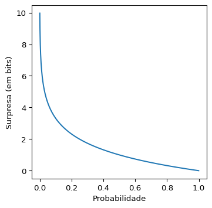
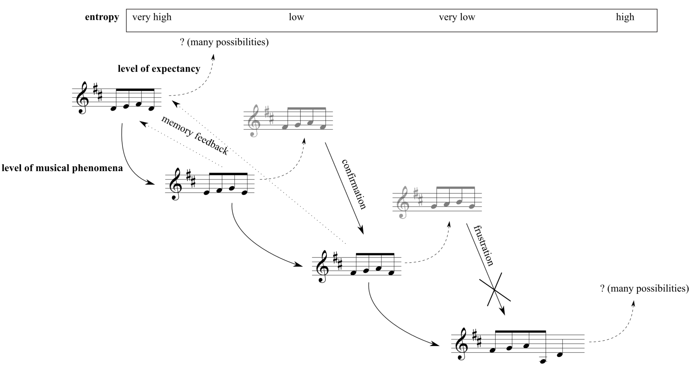
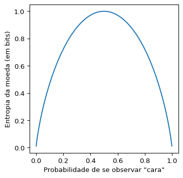
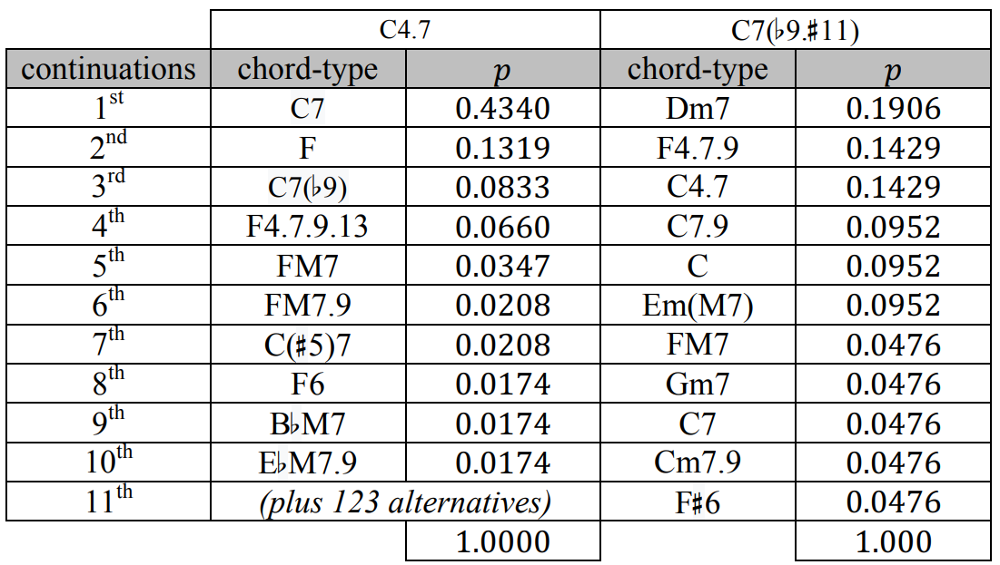

Probabilidade e entropia
\[ \def \PP {\mathbb{P}} \def \RR {\mathbb{R}} \def \Hcal {\mathcal{H}} \def \ds {\displaystyle} \newcommand{\V}[1]{{\bf #1}} \newcommand{\Vg}[1]{\boldsymbol{#1}} \]
Introdução
A Teoria das Probabilidades é um fascinante ramo da Matemática que, juntamente com a Estatística, fundamenta as bases do método científico e, portanto, permeia toda a Ciência. Seu surgimento – ao menos no conhecimento matemático derivado da cultura européia – remota ao Séc. XVI, quando o polímata (e apostador) italiano Gerolamo Cardano tentava calcular chances de eventos em jogos de azar. Por muitos séculos esse foi o pano de fundo para o estudo da Probabilidade (cuja fascinante história pode ser lida em (Salsburg 2009) e (Kucharski 2017), dentre outros), mas após sua formalização no início do Séc. XX pelo matemático russo Andrey Kolmogorov e com o advento dos computadores eletrônicos, modelagens probabilísticas fizeram-se presentes em diversos ramos do conhecimento.
A quase onipresença de tais modelos pode nos fazer questionar até que ponto o mundo que nos rodeia é de fato aleatório, ou se estamos utilizando incertezas para “mascarar” ignorâncias nossas em relação a fenômenos complexos. Tomando um exemplo simples, o lançamento de um dado é de fato um fenômeno totalmente determinístico, pois conhecendo precisamente a posição e a velocidade inicial do objeto e sua geometria, bem como a geometria da superfície onde ele será arremessado, as leis da Mecânica Clássica nos permitem prever precisamente o valor da face observada. Porém, uma vez que esse sistema é extremamente sensível em relação às condições iniciais (ou seja, uma pequena mudança nas condições do problema alteram completamente o resultado observado), torna-se mais “cômodo” optar por uma modelagem probabilística. A discussão sobre aleatoriedade na natureza foi um tema bem acalorado no início do Séc. XX, especialmente após o advento da Mecânica Quântica, e de fato pode-se provar matematicamente que nessa escala existem fenômenos inerentemente aleatórios.1
No presente texto, o principal interesse é utilizar modelos probabilísticos para descrever fenômenos musicais que, conforme esperado, não são de fato aleatórios. Assim, a Probabilidade mostra-se como uma ferramenta extremamente útil para modelar as forças volitivas de alguém que escreve uma peça musical. Mais especificamente, supõe-se que certas escolhas estéticas de um(a) compositor(a) – ou até mesmo de um determinado estilo ou estética musical – possam ser capturadas por uma análise probabilística de um conjunto suficientemente grande de suas peças. De fato, apesar da natureza ser majoritariamente determinística, há evidências de que nossa cognição toma decisões com base em modelos probabilísticos e estimativas de risco (Doya et al. 2006), de modo que é natural supor que isso se estenda também à cognição musical. David Temperley formaliza e faz experimentos computacionais nessa direção em (Temperley 2001) e (Temperley 2006).
A fim de ilustrar o ponto acima, segue um exemplo retirado de (Almada e Carvalho 2023). Na Figura 1, ao escutar o primeiro trecho, um(a) ouvinte hipotético tem alta incerteza em relação ao que se seguirá, pois como esse é o trecho inicial, não há nenhuma informação específica na qual ele(a) possa se pautar para realizar “previsões” acerca do futuro musical. Porém, ao escutar o segundo trecho, a incerteza do(a) ouvinte em relação ao que virá adiante diminui, pois ele(a) espera que algo semelhante aconteça no próximo trecho. Com efeito, havendo essa confirmação no terceiro trecho, cria-se uma alta expectativa de manutenção do padrão para o futuro, diminuindo ainda mais a incerteza do(a) ouvinte. Porém, o quarto trecho frustra essa expectativa, trazendo um novo padrão à tona, e reiniciando o ciclo de expectativas do(a) ouvinte.

Esse ciclo de criação de expectativas e sua respectiva confirmação ou frustração pode ser modelada probabilisticamente, conforme apontado por Meyer (1989). Mais especificamente, a ferramenta probabilística fundamental para formalizar essa ideia é o conceito de entropia, que é qualificada no topo da Figura 1. Informalmente, a entropia de um evento está associado ao grau de surpresa que um observador tem ao observar a ocorrência de tal evento. O restante desse capítulo tem por objetivo formalizar os conceitos de probabilidade e entropia, para futuramente o aplicarmos na análise da base de dados gerada pelo projeto e na produção de materiais composicionais.
Probabilidade
Para introduzir os conceitos básicos referentes à Teoria das Probabilidades de uma forma mais acessível, iremos omitir grande parte da formalização matemática que diz respeito a espaços amostrais, tratamento de eventos do ponto de vista da teoria dos conjuntos, e outras tecnicalidades. Partiremos direto para o conceito de variáveis aleatórias, e para uma introdução rigorosa à Teoria de Probabilidades veja (Ross 2010).
Usualmente em Matemática utilizamos o conceito de variável para representar um determinado valor numérico ou para denotar uma incógnita em uma equação: por exemplo, ao escrevermos a função \(f(x) = x^2 - 4\) estamos dizendo que o valor numérico a ser dado como entrada para a função \(f\) está armazenado na variável \(x\), e se fizermos \(x = 4\) teremos que \(f(x) = f(4) = 4^2 - 4 = 12\); no segundo caso podemos querer encontrar os valores de \(x\) que satisfazem à igualdade \(x^2 - 4 = 0\), e nesse caso temos que \(x = 2\) ou \(x = -2\). Note que em ambos os casos os valores representados pela variável \(x\) são determinísticos, ou seja, não estão sujeitos a nenhuma aleatoriedade. O conceito de variável aleatória nasce justamente para acrescentar esse efeito.
Definição 1 (Variável aleatória – definição informal) Uma variável aleatória é um resultado – qualitativo ou quantitativo – de determinado experimento aleatório. Podemos pensar também que uma variável aleatória é uma variável numérica usual, mas cujo valor específico depende de algum evento aleatório.2
Para ilustrar essa definição, retornemos ao exemplo do lançamento de um dado de seis faces. Usualmente adota-se letras maiúsculas do final do alfabeto para denotar variávels aleatórias, de modo que o valor observado após lançar o dado é codificado na variável \(X\), que pode assumir os valores 1, 2, 3, 4, 5 e 6. Como há incerteza em qual valor será observado, pode-se falar na probabilidade de se observar, digamos, \(X\) igual à 3. Matematicamente, essa sentença é abreviada por \(\PP(X = 3)\), e no caso de um dado honesto,3 temos que \[\PP(X = 1) = \PP(X = 2) = \dots = \PP(X = 6) = \frac{1}{6}.\]
O conjunto de valores que uma variável aleatória \(X\) pode assumir é denotado por \(\Omega_X\), e o chamaremos de espaço amostral associado à variável aleatória \(X\). Aqui estaremos interessados somente nas variáveis aleatórias que podem assumir apenas um conjunto finito de valores, ou seja, cujo conjunto \(\Omega_X\) seja finito. No exemplo do lançamento de um dado de seis faces (honesto ou não) temos que \(\Omega_X = \{1, 2, 3, 4, 5, 6\}\). A função \(\PP\) é chamada de probabilidade ou medida de probabilidade, e ela deve satisfazer necessariamente às duas propriedades abaixo:
- \(\PP(X = x) \geq 0\), para todo \(x \in \Omega_X\);
- \(\ds \sum_{x \in \Omega_X} \PP(X = x) = 1\).4
A primeira propriedade nos diz que probabilidades devem ser sempre valores não-negativos, o que é totalmente razoável dado a interpretação de tal conceito. Já a segunda propriedade garante um valor máximo para qualquer probabilidade, dizendo que em um dado cenário (descrito pela variável aleatória \(X\)) a soma de todas as probabilidades possíveis deve dar 1. Dessa forma, unindo as duas propriedades temos que qualquer probabilidade deverá ser um valor entre 0 e 1. Também é comum multiplicarmos tal valor por 100 e medirmos uma probabilidade em porcentagem.
Tendo introduzido o básico sobre probabilidade e variáveis aleatórias, trataremos a seguir do conceito de entropia de variáveis aleatórias.
Entropia de variáveis aleatórias
Surpresa associada a eventos
A fim de motivar o conceito de entropia de variáveis aleatórias, vejamos um exemplo.
Exemplo 1 (Entropia – motivação) Considere uma variável aleatória \(X\) que pode assumir valores no conjunto \(\Omega_X = \{0, 1\}\), com \(\PP(X = 1) = p\) e \(\PP(X = 0) = 1 - p\), onde \(0 \leq p \leq 1\). Se pensarmos que \(X = 1\) representa “observar cara no lançamento de uma moeda honesta” e \(X = 0\) representa “observar coroa no lançamento de uma moeda honesta”, temos que \(\PP(X = 0) = \PP(X = 1) = 1/2\), de modo que é “igualmente surpreendente” observar qualquer um dos dois resultados. Agora, se \(X = 1\) representa “ganhar na Mega Sena” e \(X = 0\) representa “não ganhar na Mega Sena”, a probabilidade \(p = \PP(X = 1)\) é muito baixa, de modo que observar esse evento é “extremamente surpreendente”.
Seria conveniente, portanto, ter uma maneira de formalizar a “surpresa” ao observar determinado evento, em função de sua probabilidade de ocorrência. Essa é uma das ideias centrais no trabalho seminal de Shannon e Weaver (1949), onde é proposta a Teoria da Informação, um estudo sistemático de como enviar e receber informações de modo eficiente através de canais de comunicação, da qual o conceito de entropia de variáveis aleatórias é central. Replicando o que é apresentado em (Shannon e Weaver 1949),5 gostaríamos de ter uma função \(S: (0, 1] \to \RR\) satisfazendo às seguintes propriedades abaixo:6
\(S\) deve ser uma função contínua. Informalmente, se \(p\) e \(q\) são números próximos no intervalo \((0, 1]\), então \(S(p)\) e \(S(q)\) também devem ser números reais próximos. Mais intuitivamente, eventos com probabilidade parecida de serem observados devem ter uma surpresa semelhante, algo que faz bastante sentido.
A função \(S\) calculada em \(1\) deve dar zero, ou seja, \(S(1) = 0\). Essa propriedade também é razoável, pois um evento que certamente acontece7 carrega consigo uma surpresa nula.
Se \(p < q\), então \(S(p) > S(q)\). Ou seja, eventos mais prováveis devem carregar consigo menos surpresa, algo também intuitivo. Note que essa propriedade parece um “refinamento” da propriedade 2 e do fato de não considerarmos \(0\) como uma possível entrada para a função \(S\).
Finalmente, exige-se que a surpresa de observar dois eventos independentes simultaneamente seja a soma das surpresas individuais. Matematicamente, isso significa que, para \(0 < p, q \leq 1\) a função \(S\) deve satisfazer \(S(pq) = S(p) + S(q)\). Essa propriedade pode parecer um pouco mais complexa que as outras, porém façamos uma análise através do seguinte exemplo: ao lançar uma moeda (honesta ou não) e um dado (honesto ou não), experimentos que podem ser considerados independentes, a surpresa de se observar “cara” na moeda e a face “três” no dado, simultaneamente, é a soma das surpresas individuais.8
Pode-se provar que existe essencialmente uma única função satisfazendo tais propriedades, conforme enunciado no Teorema 1 abaixo:
Teorema 1 Se a função \(S\) satisfaz aos axiomas 1 até 4 acima, então \[S(p) = -\log_b(p),\] para alguma base \(b > 1\).9
A mudança de base na função logarítmica é dada pela multiplicação por uma constante: \[\log_a(p) = \frac{\log_b(p)}{\log_b(a)},\] o que justifica o fato de, apesar de infinitos valores de \(b\) “servirem” para medir a surpresa, todos eles levam a medições equivalentes. A Figura 2 ilustra o gráfico da função \(S\), considerando a base \(b = 2\).
Quando a surpresa é medida na base \(b = 2\) dizemos que sua unidade é bits. Essa escolha é extremamente importante dentro do escopo da Teoria da Informação, pois permite uma interpretação muito clara dentro do contexto de compressão, envio e recepção de informações codificadas em dígitos binários, conforme será ilustrado no Exemplo 4 mais adiante. Para mais detalhes sobre Teoria da Informação veja (Cover e Thomas 2005).
Entropia de variáveis aleatórias
Vimos então como se calcula a surpresa de um único evento. Porém, relembrando o Exemplo 1, uma variável aleatória é composta por diversos eventos, de modo que gostaríamos de sumarizar uma surpresa média associada à variável aleatória, e não elencar uma lista de surpresas associadas a cada possível valor que essa variável aleatória pode assumir. Uma ideia é fazer uma média ponderada das surpresas associadas a cada valor que ela pode assumir, cujo peso é justamente a probabilidade de se obsertar tal valor. Isso é justamente a definição da entropia de uma variável aleatória, formalizada na Definição 2:
Definição 2 (Entropia – definição) A entropia de uma variável aleatória discreta \(X\) que assume seus valores no conjunto \(\Omega_X\) é dada por \[\Hcal(X) = -\sum_{x \in \Omega_X} \PP(X = x) \log_b (\PP(X = x)). \tag{1}\]
Comentário 1. Existe uma íntima relação desse conceito com o seu análogo em Termodinâmica, que está fora do escopo deste texto. Quem apontou esse paralelo para Shannon foi John von Neumann, quando perguntado de sugestões para como nomear a quantidade recém-definida: Você deveria chamá-la de entropia, por duas razões. Em primeiro lugar, sua função de incerteza tem sido usada na Mecânica Estatística sob esse nome, então ela já tem um nome. Em segundo lugar, e mais importante, ninguém realmente sabe o que a entropia realmente é, então em um debate você sempre terá a vantagem.10
Para melhor ilustrar o conceito de entropia de uma variável aleatória, retornemos ao Exemplo 1 e calculemos a entropia de uma moeda.
Exemplo 2 (Entropia de uma moeda) Seja agora \(X\) uma variável aleatória codificando o lançamento de uma moeda, que pode dar “cara” com probabilidade \(0 \leq p \leq 1\) ou “coroa” com probabilidade \(0 \leq 1 - p \leq 1\). Associamos “coroa” ao valor \(0\) e “cara” ao valor \(1\). Aplicando a fórmula na Equação 1 e considerando a base \(b = 2\), temos que: \[ \begin{align*} \Hcal(X) &= -\sum_{x \in \Omega_X} \PP(X = x) \log_b (\PP(X = x)) \\ &= - \left[(1 - p)\log_2(1 - p) + p\log_2(p)\right], \end{align*} \] cujo gráfico pode ser visto na Figura 3:

À luz da interpretação da entropia representar a “surpresa média” de uma variável aleatória \(X\), podemos interpretar o gráfico na Figura 3 da seguinte forma: uma moeda que tem alta chance de dar cara ou coroa (\(p\) próximo a \(1\) ou \(0\), respectivamente) tem uma “baixa surpresa média”, pois espera-se observar algum desses dois eventos com muito mais frequência do que o outro, tornando a moeda altamente “previsível”; por outro lado, a moeda com maior entropia é justamente a moeda honesta, com \(p = 1/2\), pois como não há nenhum evento preferencial, a moeda é, de certa forma, “o mais aleatória possível”.
Vejamos agora um exemplo do cálculo de entropia com uma variável aleatória que assume mais de dois valores.
Exemplo 3 (Entropia de um dado honesto) Seja agora \(Y\) a variável aleatória que codifica o valor observado no lançamento de um dado honesto de seis faces. Aplicando a fórmula na Equação 1 e considerando a base \(b = 2\), temos que: \[ \begin{align*} \Hcal(Y) &= -\sum_{y \in \Omega_Y} \PP(Y = y) \log_b (\PP(Y = y)) \\ &= -\sum_{i = 1}^{6} \frac{1}{6} \log_2\left(\frac{1}{6}\right) \\ &= -\log_2\left(\frac{1}{6}\right) \\ &= \log_2(6) \\ &\approx 2,\!585~bits, \end{align*} \] após aplicar propriedades básicas da função logarítmica.
Para melhor entender o valor obtido no Exemplo 3, o analisemos à luz do Teorema 2:
Teorema 2 (Máxima entropia) Seja \(X\) uma variável aleatória discreta que assume valores no conjunto \(\Omega_X = \{1, \dots, n\}\). A entropia de \(X\) é máxima quando todos os valores em \(\Omega_X\) são equiprováveis (sendo atingidos com probabilidade \(1/n\)) e tal entropia é dada por \(\log_b(n)\).
Dessa forma, a entropia de uma variável aleatória é capaz de capturar conjuntamente a quantidade de valores que tal variável aleatória é capaz de assumir, bem como a forma como as probabilidades se distribuem sobre esses valores. No exemplo do dado, se tivéssemos probabilidade \(1/2\) de observar a face \(1\) e \(1/10\) de observar qualquer outra face de \(2\) até \(6\), denotando o novo valor observado por \(\widetilde{Y}\), sua nova entropia (em bits) seria dada por: \[ \begin{align*} \Hcal(\widetilde{Y}) &= -\sum_{y \in \Omega_Y} \PP(\widetilde{Y} = y) \log_b (\PP(\widetilde{Y} = y)) \\ &= -\left[\frac{1}{2}\log_2\left(\frac{1}{2}\right) + \sum_{i = 2}^{6} \frac{1}{10} \log_2\left(\frac{1}{10}\right)\right] \\ &= -\left[\frac{1}{2}\log_2\left(\frac{1}{2}\right) + 5 \times \frac{1}{10} \log_2\left(\frac{1}{10}\right)\right] \\ &\approx 2,\!160~bits, \end{align*} \] indicando que esse dado é “mais previsível” do que um dado honesto, visto que \(\Hcal(\widetilde{Y}) < \Hcal(Y)\). Porém, note que ao comparar somente os valores das entropias de \(\widetilde{Y}\) e \(Y\) não temos nenhum indício de como se dá essa maior previsibilidade de \(\widetilde{Y}\). Para obter essa informação é necessário examinar como se dá de fato a distribuição das probabilidades associadas a ambas as variáveis aleatórias sobre os valores em \(\Omega_Y\).
Para melhor compreender a relação entre a unidade de “bits” e ideias de codificação e transmissão de informações, vejamos um exemplo, retirado de (Ross 2010).
Exemplo 4 (Codificação de dados) Considere uma fonte de informação (por exemplo, um arquivo de texto em um computador), formado somente pelos símbolos \(x_1\), \(x_2\), \(x_3\) e \(x_4\), que são sorteados aleatoriamente e independentemente de acordo com a variável aleatória \(Z\) que dá a tais valores as respectivas probabilidades de \(1/2\), \(1/4\), \(1/8\) e \(1/8\). Suponha que gostaríamos de codificar esses símbolos em dígitos binários de forma ótima, ou seja, de modo que o comprimento médio de uma sequência proveniente de tal fonte seja o mínimo possível. Dentre diversas possibilidades de codificação, considere a correspondência abaixo: \[ \begin{equation} \begin{split} x_1 &\leftrightarrow 0 \\ x_2 &\leftrightarrow 10 \\ x_3 &\leftrightarrow 110 \\ x_4 &\leftrightarrow 111. \end{split} \end{equation} \] Em média, esse esquema de codificação irá utilizar \(\frac{1}{2} \times 1 + \frac{1}{4} \times 2 + \frac{1}{8} \times 3 + \frac{1}{8} \times 3 = 1,\!75\) bits por símbolo para codificar uma mensagem dessa fonte. Ao se calcular a entropia da variável aleatória \(Z\), utilizando a fórmula na Equação 1 com a base \(b = 2\), encontra-se, não coincidentemente, exatamente o mesmo valor.
Dessa forma, conforme ilustrado pelo Exemplo 4, a entropia de uma variável aleatória está intimamente ligada com uma forma de “codificar” essa variável aleatória de modo a economizar o máximo de informação possível. Assim, fica claro qual a grande importância do conceito de entropia para a Teoria da Informação.
Um exemplo em Música
Para fechar este capítulo sobre Probabilidade, vejamos um exemplo em Música, também retirado de (Almada e Carvalho 2023). A Figura 4 compara a entropia (à direita, medida em bits) e o número de possíveis continuações (à esquerda) do tipo acordal mais povoado (Y, formado por acordes dominantes – veja o Capítulo Modelos teóricos para mais detalhes) dentro do corpus JOBIM, e cada linha representa um dos possíveis membros do genus Y (cifrados com fundamental Dó, para maior clareza).

Note que, apesar de haver uma certa correlação positiva entre ambas as quantidades ilustradas (ou seja, quanto maior o número de continuações, maior tende a ser a entropia), conforme justificado pelo Teorema 2, isso nem sempre é verificado, pois a entropia também captura a distribuição da massa de probabilidade sobre as possíveis continuações. Compare, por exemplo, os tipos acordais “C4.7” e “C7(♭9.♯11)”, destacados na Figura 4: apesar da discrepância entre os números de possíveis continuações (133 e 11, respectivamente) suas entropias são consideravelmente similares (3,311 e 3,279 bits, respectivamente).
Ao analisarmos a distribuição de probabilidade referente às continuações de ambos os tipos acordais, parcialmente explicitadas na Figura 5, consegue-se compreender melhor essa discrepância. Note que a distribuição para as continuações do tipo acordal “C4.7” é muito mais assimétrica, visto que a continuação mais provável (“C7”) concentra quase metade da massa de probabilidade total, estando os outros 56% distribuídos em outras 132 possibilidades. Por outro lado, as probabilidades das 11 possíveis continuações do tipo acordal “C7(♭9.♯11)” são muito mais uniformemente distribuídas, o que contribui para aumentar a entropia associada a ele. De fato, a máxima entropia com 11 continuações possíveis é dada por \(\log_2(11) \approx 3,\!459\) bits, conforme o Teorema 2, enquanto que o valor observado para a entropia das continuações do tipo acordal “C7(♭9.♯11)” dentro do corpus JOBIM foi de 3,279 bits, um valor próximo ao máximo. Note que com um total de 133 continuações, a máxima entropia é dada por \(\log_2(133) \approx 7,\!055\) bits, um valor bem acima do observado no corpus JOBIM para o tipo acordal “C4.7”, 3,331 bits.

Referências
3Blue1Brown. 2020. «Why "probability of 0" does not mean "impossible" | Probabilities of probabilities, part 2». https://www.youtube.com/watch?v=ZA4JkHKZM50.
Almada, Carlos, e Hugo Carvalho. 2023. «Entropy, Probabilistic Harmonic Space, and the Harmony of Antonio Carlos Jobim». Musica Theorica 7 (1).
Cover, Thomas, e Joy Thomas. 2005. Elements of Information Theory. 2.ª ed. New Jersey: Wiley.
Doya, Kenji, Shin Ishii, Alexandre Pouget, e Rajesh P. N. Rao. 2006. Bayesian Brain: Probabilistic Approaches to Neural Coding. Cambridge: The MIT Press.
Kucharski, Adam. 2017. A ciência da sorte - A matemática e o mundo das apostas: de loterias e cassinos ao mercado financeiro. Rio de Janeiro: Zahar.
Meyer, Leonard. 1989. Style and Music: Theory, History, and Ideology. Philadelphia: University of Pennsylvania Press.
Ross, Sheldon. 2010. Probabilidade: Um Curso Moderno com Aplicações. 8.ª ed. Porto Alegre: Bookman.
Salsburg, David. 2009. Uma senhora toma chá... Como a estatística revolucionou a ciência no século XX. Rio de Janeiro: Zahar.
Shannon, Claude, e Warren Weaver. 1949. The Mathematical Theory of Communication. Champaign: University of Illinois Press.
Temperley, David. 2001. The Cognition of Basic Music Structures. Cambridge: The MIT Press.
———. 2006. Music and Probability. Cambridge: The MIT Press.
Veritasium. 2014. «What is NOT random?» https://www.youtube.com/watch?v=sMb00lz-IfE.
Vsauce. 2014. «What is random?» https://www.youtube.com/watch?v=9rIy0xY99a0.
Wikipedia. 2023. «History of entropy – Information Theory». https://en.wikipedia.org/wiki/History_of_entropy#Information_theory.
———. 2024. «Logarithm». https://en.wikipedia.org/wiki/Logarithm.
Notas de rodapé
Para mais detalhes, veja os excelentes vídeos de divulgação científica (Vsauce 2014) e (Veritasium 2014) sobre aleatoriedade.↩︎
Vale lembrar que essa definição está longe de ser rigorosa, e que aqui estamos prezando por uma maior compreensibilidade em detrimento de um maior rigor matemático. Para uma definição rigorosa, veja (Ross 2010).↩︎
Pode-se partir do pressuposto que essa é a definição de um dado honesto, e utilizando a Lei dos Grandes Números, um resultado extremamente importante da Teoria das Probabilidades, pode-se provar que essa definição implica na interpretação usual de um dado honesto: “ao lançá-lo um número suficientemente grande de vezes, observaremos cada face aproximadamente o mesmo número de vezes”.↩︎
O símbolo \(\ds \sum\) significa “somatório”, e a expressão \(\ds \sum_{x \in \Omega_X} \PP(X = x)\) significa “a soma das probabilidades \(\PP(X = x)\) para todo valor \(x\) em \(\Omega_X\)”, ou seja, somar \(\PP(X = x)\) para todo valor \(x\) que a variável aleatória \(X\) pode assumir”.↩︎
Essa derivação é apresentada em uma linguagem matemática moderna, juntamente com as devidas demonstrações, em (Ross 2010).↩︎
A notação \(S: (0, 1] \to \RR\) significa que a função \(S\) recebe como entrada números reais entre 0 (exclusive) e 1 (inclusive) e nos retorna um outro número real. Não consideramos \(0\) como uma possível entrada para a função \(S\) pois, intuitivamente, eventos de probabilidade zero seriam “infinitamente surpreendentes”, de modo que \(S(0)\) não seria um número real.↩︎
Rigorosamente, na Teoria de Probabilidades, um evento com probabilidade \(1\) de ocorrência é dito um evento quase-certo, uma nomenclatura que parece fortemente não-intuitiva. Porém, em determinados contextos, eventos de probabilidade \(0\) podem acontecer. Para mais detalhes, veja (Ross 2010) e o excelente vídeo de divulgação científica (3Blue1Brown 2020).↩︎
Intuitivamente, dois eventos \(A\) e \(B\) são ditos independentes se: ter conhecimento sobre a ocorrência ou não do evento \(A\) nada informa sobre a ocorrência ou não do evento \(B\), e vice-versa. O exemplo do lançamento de um dado de uma moeda é bastante utilizado para ilustrar esse conceito, porém existem exemplos mais interessantes e menos intuitivos de eventos independentes. Por exemplo, ao se lançar um dado honesto, seja \(A\) o evento “o número observado é par” e \(B\) o evento “o número observado é 5 ou 6”. Esses eventos são independentes, pois a chance de se observar o evento \(B\) é dada por \(\PP(B) = 2/6 = 1/3\); e sabendo da ocorrência do evento \(A\), a nova chance de observar o evento \(B\) é dada por \(\PP(B | A) = \PP(B \cap A)/\PP(A) = (1/6)/(1/2) = 1/3\). Esse último conceito é chamado de probabilidade condicional, e para mais detalhes sobre ele e sobre independência entre eventos, veja (Ross 2010).↩︎
Relembremos que a função logarítmica captura, essencialmente, a “ordem de grandeza” de determinado número, em uma determinada base: se \(c = \log_b(p)\) então \(b^c = p\). Para mais detalhes veja (Wikipedia 2024).↩︎
Original em Inglês: “You should call it entropy, for two reasons. In the first place your uncertainty function has been used in statistical mechanics under that name, so it already has a name. In the second place, and more important, no one really knows what entropy really is, so in a debate you will always have the advantage.” (Wikipedia 2023)↩︎